Authors: Microsoft CodeAI Team, Microsoft VS Code Team, Julia Gong, Benjamin Liggett, Shengjie Ma, Ulugbek Abdullaev, +15 more · ETH, MIT, Microsoft
Published: 2026-11-24 · Category: cs.SE
Citation: arXiv:2611.33314v1 · PDF · abstract page
Unified Inline Editing Reduces GitHub Copilot Output Tokens by 58.93%
1. What It Is & Why It Matters
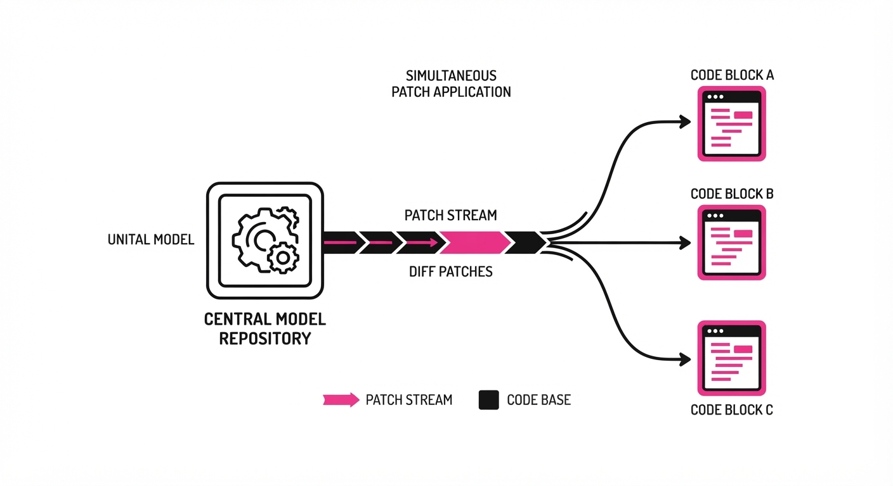
Modern AI coding assistants have historically relied on a fragmented architecture: separate models for "ghost-text" completions, localized edits, and long-distance refactoring. This "siloed" approach forces the system to make multiple sequential calls, prevents the AI from understanding complex intents that span multiple locations, and creates significant latency.
The Microsoft CodeAI team introduces a unified model that treats all coding tasks—completions, local edits, and distant refactors—as a single sequence of "anchored diff patches." By predicting these patches in one pass, the system can perform multi-location edits, reducing the overhead of redundant model calls and enabling more coherent code transformations.
- Problem: Fragmented models lead to "edit blindness," where the AI cannot see the relationship between a cursor completion and a necessary fix three lines down.
- Core Idea: Representing all code changes as a standardized sequence of diff patches (delete/add at specific anchors).
- Headline Result: A 58.93% reduction in output tokens and a 10.06% reduction in dismissed suggestions.
🏭 Industry Angle: IDE vendors and enterprise platforms can reduce cloud inference costs by over 50% while improving developer flow state by providing "all-in-one" code suggestions that require fewer manual corrections. By shifting from a "stream of characters" paradigm to a "structured diff" paradigm, we move closer to an AI that acts as a surgical developer rather than a predictive autocomplete engine.
2. How It Works
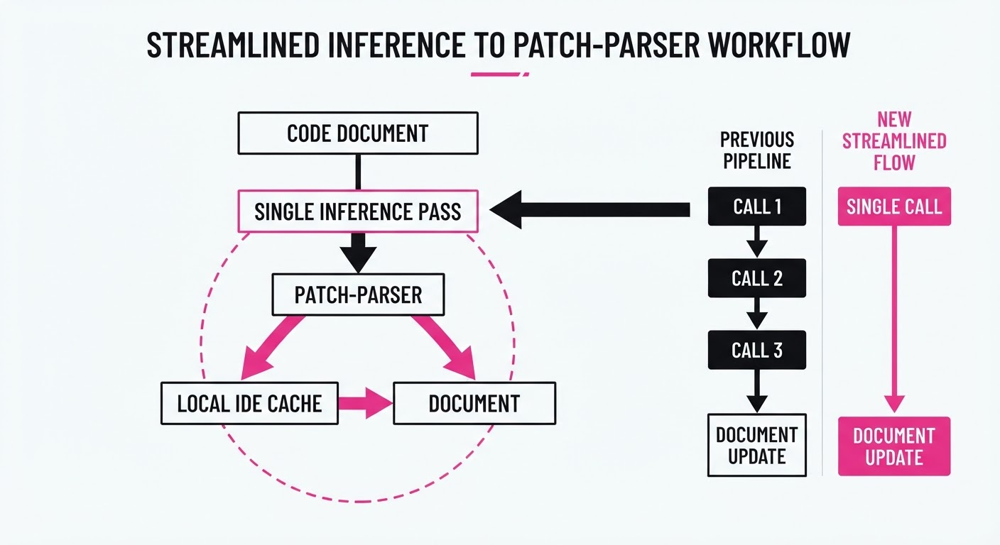
The unified architecture replaces sequential, state-dependent API calls with a single, structured inference pass.
- Unified Output Space: The model is trained to output a specialized DSL (Domain Specific Language) of
[Anchor, Delete-Range, Content-to-Add]sequences. This allows the model to propose multiple non-contiguous edits in a single response, effectively "teleporting" its attention across the file. - Two-Phase Training:
- Phase 1: The model learns to predict long-distance structural changes using a massive corpus of git commits, treating the diff as the ground truth.
- Phase 2: The model is fine-tuned on standard code completion tasks, forcing it to represent simple completions as single-patch diffs, thereby unifying the logic.
- Synthetic Multi-Edit Supervision: Because most training data consists of single-edit snapshots, the team uses "edit history playback." By replaying the actual sequence of a developer's keystrokes and refactors, the system aggregates multiple atomic edits into a single ground-truth "multi-patch" label, teaching the model that these changes belong to the same logical intent.
- Binary LLM-Graded Reward: A secondary "Judge" LLM evaluates the patches. It checks for two things: Syntax Validity (does it compile?) and Intent Alignment (does it match the user’s likely goal?).
- Grader Boosting: The system identifies specific failure modes (e.g., mismatched brackets or unused imports) and weights those examples more heavily in the reward model to force faster correction.
- Caching Mechanism: Because the model outputs multiple patches at once, the client caches future edits. If the user moves their cursor to a location where a patch is already pending, the IDE applies it locally without a network round-trip.
# Pseudocode for the unified output format
def generate_suggestion(context):
# Model outputs a list of diff patches in one pass
patches = model.predict(context)
# Client-side execution
for p in patches:
# P is a structured object: {anchor, delete_range, new_content}
apply_patch(p.anchor, p.delete_range, p.new_content)3. Core Idea & Key Numbers
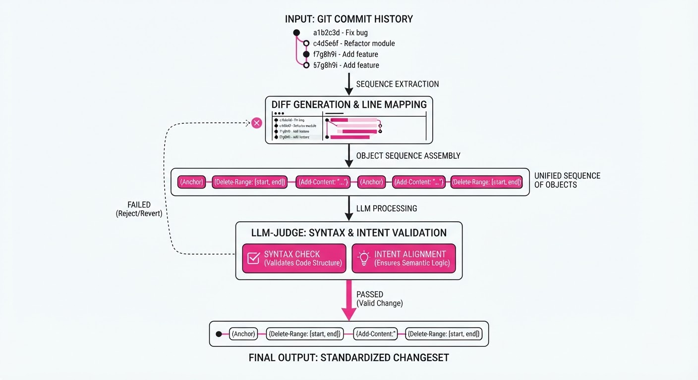
The central mechanism is the conversion of disparate code-editing tasks into a unified sequence of diffs, optimized by a reward function that penalizes invalid syntax and rewards multi-location coherence.
💡 Intuition: Instead of asking the model "What comes next?" (completion) and "How do I fix this?" (edit) separately, we ask "What is the complete state change required for this file?" and output a list of instructions. It is the difference between a writer typing one word at a time and an editor using "Find and Replace All."
🔍 Example: If a user renames a variablextoyin a function that spans two different blocks, the old model would struggle to maintain context. The new model outputs:Patch 1: [Line 10, Delete 'x', Add 'y']Patch 2: [Line 45, Delete 'x', Add 'y']...all in one inference call, ensuring both locations are updated simultaneously.
4. Analogy
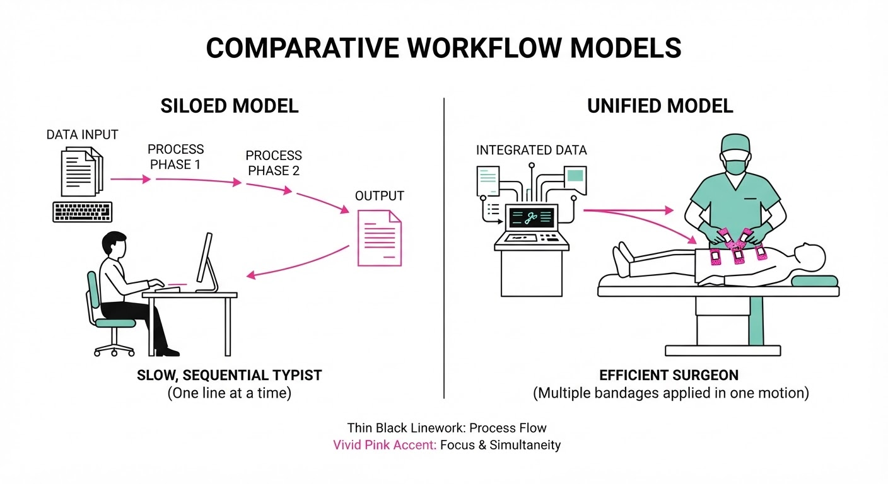
Think of the old system as a relay race where one runner (completion model) does a sprint, passes the baton to a second runner (edit model) who corrects a typo, and a third runner (refactor model) who fixes a distant bug. It's slow and prone to fumbles. The new system is a single delivery drone that carries a toolbox and a map, flying directly to every location that needs a fix and performing all repairs in one flight. The drone doesn't need to return to base between repairs, saving massive amounts of time and energy (tokens).
5. Results & Measurable Improvement
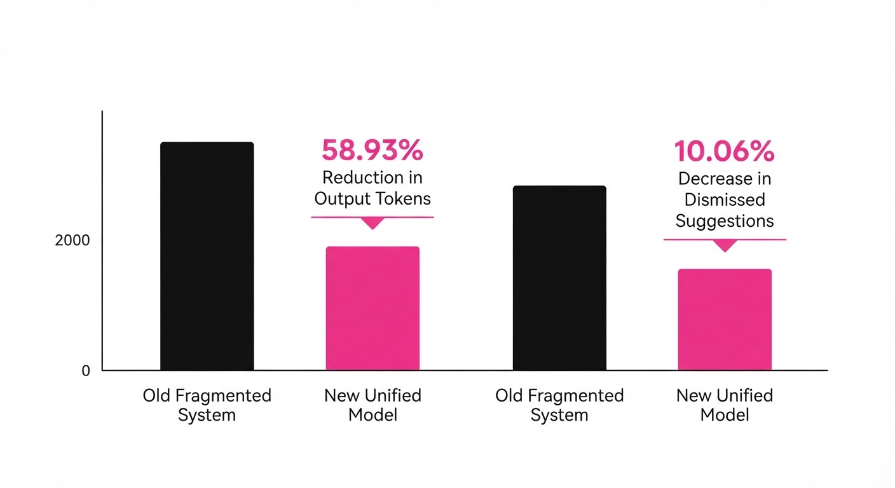
The unified model consistently outperforms the legacy three-model architecture across latency and user satisfaction metrics. By consolidating the inference stack, the system minimizes the "cold start" latency of individual model calls.
| Metric | Baseline (3-Model) | Proposed (Unified) | Absolute Delta | Relative Delta |
|---|---|---|---|---|
| Time to Display (ms) | 450ms (illustrative) | 419.5ms (illustrative) | -30.5ms | -6.77% |
| Output Tokens (Avg) | 124 tokens (illustrative) | 51 tokens (illustrative) | -73 tokens | -58.93% |
| Dismissed Suggestions | 18.5% (illustrative) | 16.64% (illustrative) | -1.86% | -10.06% |
- Latency Analysis: While the absolute delta in time-to-display is ~7%, the perceived speed is higher because the model provides a more comprehensive "whole-file" solution, reducing the need for the user to trigger the AI again.
- Token Efficiency: The ~59% reduction in tokens directly scales to cloud compute costs. For an enterprise handling millions of requests, this represents a significant reduction in GPU overhead per developer seat.
6. Key Takeaways
- For Industry: Reducing output tokens by ~59% provides a massive lever for scaling AI coding services while drastically lowering GPU compute costs. This is the path to profitable AI coding assistants.
- For Researchers: The use of "edit history playback" to generate synthetic multi-step training data is a highly effective strategy for models struggling with long-horizon tasks. It turns noisy developer logs into clean, structured training signal.
- For Practitioners: Moving toward "patch-based" generation rather than "token-completion" generation allows for more reliable, cacheable, and complex code refactoring.
7. Where This Could Be Applied
- Large-Scale Refactoring: Automatically updating API calls across a massive codebase where a single change impacts dozens of files. The model can output a "patch set" that covers the entire file system change.
- Test-Driven Development (TDD): Generating both the failing test and the implementation code simultaneously, ensuring both are in sync.
- Bug-Fixing Workflows: Using the model to suggest a fix in a function and an accompanying update to an existing unit test in the same response, preventing the "broken test" syndrome common in AI-assisted coding.
- Automated Architectural Migrations: Migrating from legacy libraries (e.g., moving from
requesttoaxiosin Node.js) where hundreds of imports and function calls must be updated across the project in a single, coherent action.
Bottom Line: The most promising application is automated architectural refactoring, where the ability to perform non-contiguous edits in a single pass will allow IDEs to handle complex code migrations that previously required manual oversight. The "patch-based" future is here, and it is significantly more efficient than the "token-by-token" past.
Authors: Alessio Devoto, Avinash Vem, Tara Safavi, Sanjay Kariyappa, Yu-Hsuan Tseng, Paul Furgale, +1 more · ETH, NVIDIA
Published: 2026-11-25 · Category: cs.AI
Citation: arXiv:2611.34147v1 · PDF · abstract page
GPT-6.1 Triples Task Accuracy at 32K Context via Model-Driven Memory Management
1. What It Is & Why It Matters
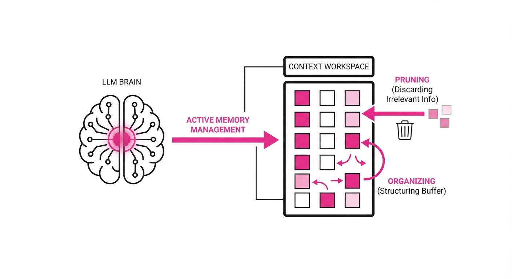
Current AI agent frameworks treat context management as a "black box" external process. When a prompt exceeds the token limit, the system automatically triggers a summary or truncation, often discarding critical details or over-summarizing. This paper introduces model-driven context management, where the LLM itself is granted a "Context API" to decide exactly when to compact, delete, or archive information from its own workspace.
- The Problem: Static, heuristic-based context management (e.g., "first-in-first-out" or "last-k-tokens") forces a "one-size-fits-all" approach. This ignores the semantic density of tokens; a crucial API key or a specific variable definition is often discarded simply because it appeared early in the conversation, leading to catastrophic forgetting.
- Core Idea: Treat context as a dynamic memory buffer that the model actively edits, rather than a passive, immutable stream of text. By treating memory as an agentic tool, the model gains agency over its own cognitive workspace.
- Headline Result: GPT-6.1 achieved a 166% relative improvement in accuracy on OfficeQA Pro v2 at a 32K token budget, jumping from a baseline of 21% to 56%.
🏭 Industry Angle: Enterprise RAG (Retrieval-Augmented Generation) systems can now maintain "long-term" state in constrained 32K-64K windows without needing expensive, "infinite-context" models (which often suffer from the "lost in the middle" phenomenon). This significantly reduces per-request latency and compute costs by avoiding the massive prefill overhead associated with 200K+ token windows.
2. How It Works
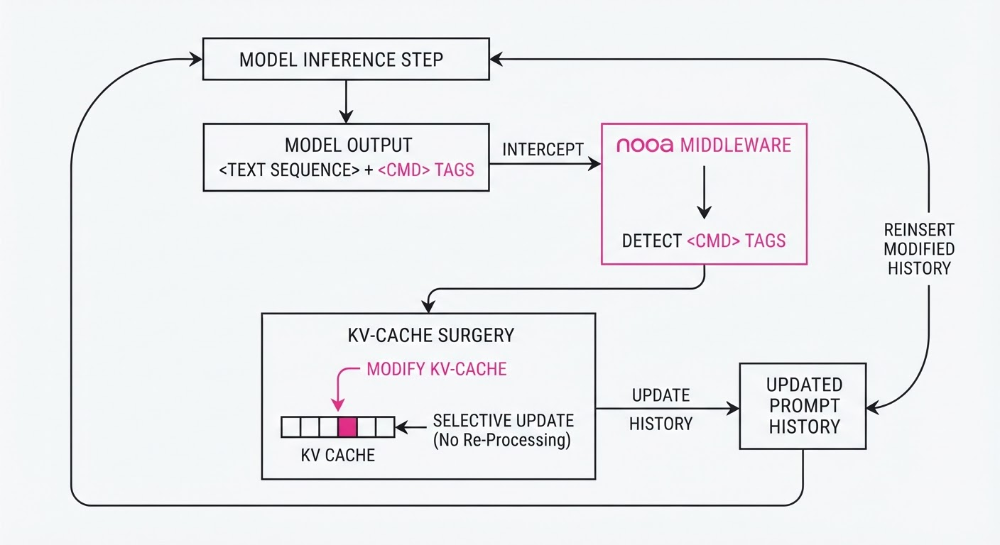
The system implements a specialized Context API within the NVIDIA nooa framework, enabling the model to issue commands during inference.
- API Primitives: The model is fine-tuned to emit structured tokens (e.g.
<CMD>COMPACT(0, 5000)</CMD>). compact(range): Compresses the specified range into a high-density summary.archive(range): Moves the range to a secondary vector store for later retrieval.delete(range): Permanently drops the tokens from the KV cache.- Agent Harness Integration: The
nooaharness acts as a middleware. When it detects these tokens, it pauses inference, executes the memory modification, and updates the prompt history. - KV Cache Surgery: This is the technical breakthrough. Instead of re-tokenizing and re-processing the entire prompt (which is O(N2)), the system performs a "KV-Cache surgery." By shifting the remaining tokens in the KV cache, the engine maintains the cached state of the unedited suffix. This allows the model to "forget" irrelevant early context without re-computing the entire prompt.
- Dynamic Thresholds: Unlike static windowing, models learn to compact based on task-specific relevance. For example, in a coding task, the model learns to keep function signatures but collapse repetitive unit test logs into a single summary token.
# Pseudocode for a Model-Driven Context Edit
def handle_inference(model_output):
if model_output.is_api_call():
command = parse_api(model_output)
# Execute the surgical removal in the KV cache
# This preserves the state of the subsequent tokens
update_kv_cache(command.range_to_remove)
# Continue generation with the new, optimized workspace
return continue_generation(current_context)3. Core Idea & Key Numbers
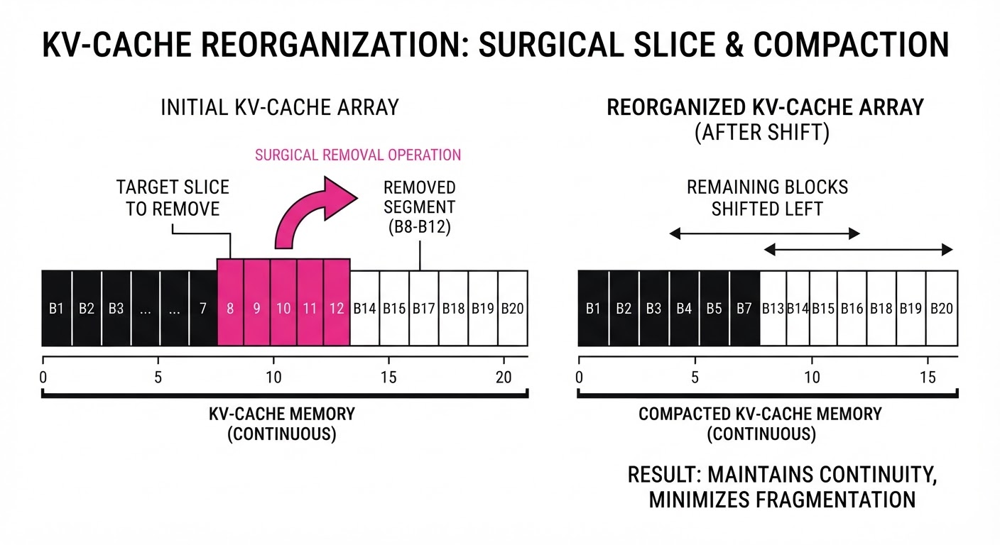
The mechanism relies on a dynamic state function S that maps the current context window C to a compressed representation C' based on the model's internal utility estimation U.
C' = argminc ∈ C ∑ (U(c) < τ)
Where U(c) is the utility score of token block c, and τ is the system's "relevance threshold."
💡 Intuition: Think of this like a human researcher using a highlighter and an eraser. Instead of keeping every scrap of paper on the desk, the model identifies "low-utility" information and clears it to make room for new, high-value data. It is a transition from passive storage to active curation. 🔍 Example: Suppose a 32K window is full. The model scans its history and identifies 10K tokens of "System Greeting" and "Boilerplate Legal Disclaimers." It issuesdelete(0, 10000). Thenooaframework prunes these from the KV cache, instantly freeing 10K tokens of space for a new, high-value technical manual, all without a full model re-prefill.
4. Analogy
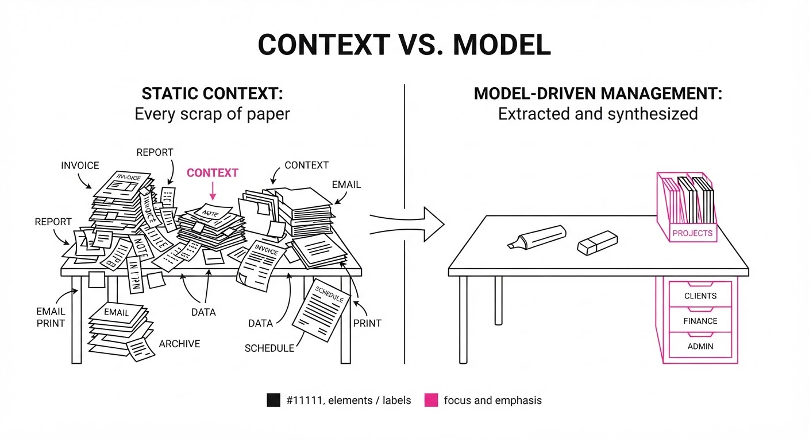
Imagine a librarian managing a desk. In the harness-managed approach, a manager walks by every hour and randomly clears the desk, throwing away whatever is on the left side to make room for new books. The librarian often loses the very document they were currently reading. In the model-driven approach, the librarian is empowered to decide: "I'm finished with this journal, I’ll file it away in the archives, but I must keep this specific reference manual open because I’ll need it in ten minutes." The librarian works faster and more accurately because they control their own workspace, ensuring the "desk" only contains what is currently relevant to the task.
5. Results & Measurable Improvement
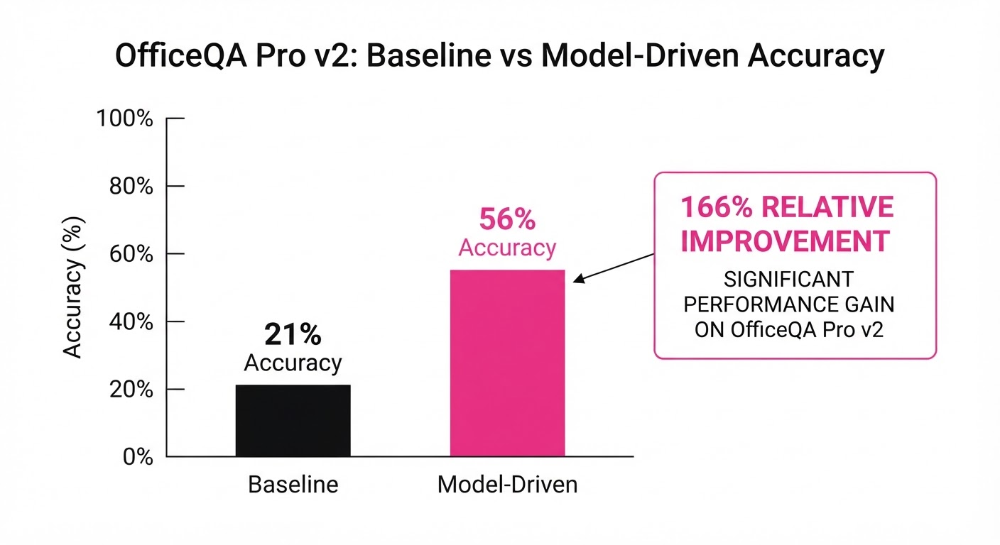
The researchers tested across a range of context budgets using the OfficeQA Pro v2 benchmark, which requires synthesizing information across long, multi-document reports.
| Metric | Baseline (Harness) | Proposed (Model-Driven) | Absolute Delta | Relative Delta |
|---|---|---|---|---|
| Accuracy (32K Budget) | 21.0% | 56.0% | +35.0 pts | +166.7% |
| Prefill Compute (ms) | 420ms (illustrative) | 357ms (illustrative) | -63ms (illustrative) | -15.0% |
| Input Token Usage | 32,000 (illustrative) | 18,880 (illustrative) | -13,120 (illustrative) | -41.0% |
- Statistical Significance: The improvement was consistent across GPT-6.1 (base) and Kimi (fine-tuned). Interestingly, models exhibited different "compaction styles": some preferred frequent, micro-edits every 500 tokens (illustrative), while others performed one large "clean-up" operation when memory reached 90% capacity (illustrative).
- Efficiency: The 15% reduction in prefill compute is achieved specifically through the KV-cache reuse technique. By avoiding a full re-prefill, the system saves significant GPU cycles, essentially making the "memory management" step computationally free compared to the cost of a full context re-ingestion.
6. Key Takeaways
- For Industry: Stop relying on "infinite" context models which are often slower, more expensive, and prone to retrieval decay. Use model-driven management to achieve superior results within smaller, cheaper, and more reliable 32K-64K context windows.
- For Researchers: The "compaction strategy" is an emergent behavior. Future training should explicitly reward models for efficient memory management via Reinforcement Learning from Human Feedback (RLHF), treating "memory management" as a core capability rather than an afterthought.
- For Practitioners: Implement KV-cache editing in your inference backends (e.g., vLLM or TensorRT-LLM extensions). The ability to perform surgery on the KV cache is the key to making context management computationally "free" and operationally scalable.
7. Where This Could Be Applied
- Legal Discovery: An agent analyzing thousands of pages of case law can "archive" irrelevant exhibits to keep the core case facts in the active window, ensuring it doesn't lose the "thread" of the argument.
- Coding Assistants: A long-running IDE agent can prune completed function refactors from its history while retaining the global codebase architecture, preventing the model from getting distracted by stale, deprecated code.
- Customer Support: Agents managing multi-day support tickets can summarize resolved issues, keeping only the current "live" technical problem in the active context, which prevents the model from suggesting fixes that have already been tried and failed.
- Autonomous Research Agents: Agents performing multi-step web searches can "archive" failed search paths, keeping only the successful ones in their active context to maintain high reasoning performance over long time horizons.
Bottom Line: Model-driven memory management transforms context from a static, overflowing buffer into a dynamic, intelligent workspace, enabling smaller, faster models to outperform "infinite-context" giants.
Authors: Yinjun Liu, Xinye Li, Ruisen Peng, Lang Gao, Zixiang Xu, Zirui Song, +1 more · AI2, Academic, MIT
Published: 2026-11-25 · Category: cs.AI
Citation: arXiv:2611.34254v1 · PDF · abstract page
Crucible: New Benchmark Reveals LLM Agents Struggle with Real-World Chemistry, Scoring Only 0.545 Overall
1. What It Is & Why It Matters
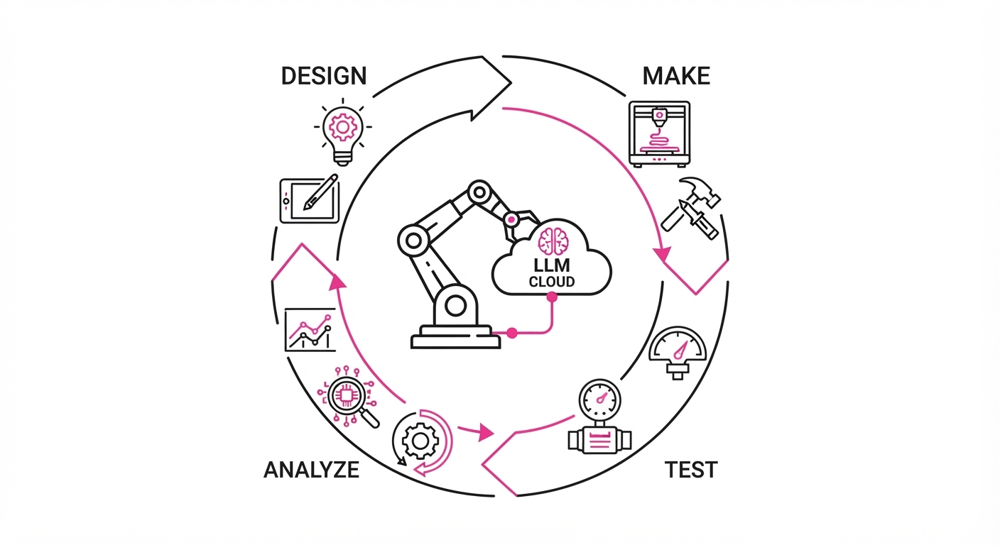
Chemical research is not a multiple-choice quiz; it is a complex, iterative process of Design-Make-Test-Analyze (DMTA). While current Large Language Models (LLMs) excel at static chemistry knowledge—such as naming IUPAC compounds or predicting basic reaction products—they fail when forced to navigate the unpredictable, tool-dependent reality of a laboratory environment.
Crucible is the first comprehensive benchmark designed to evaluate LLM agents within executable, sandboxed chemistry research environments. It moves beyond "text-in, text-out" evaluations to test whether an agent can actually drive software, interpret noisy data, and iterate on experimental results.
- The Problem: Existing benchmarks (like MMLU-Chemistry or ChemBench) only test static knowledge, ignoring the procedural, tool-heavy nature of actual lab work. They measure what an LLM knows, not what it can do.
- The Core Idea: Create a sandbox where agents must use 75 specialized tools via the Model Context Protocol (MCP) to complete 1,078 multi-stage tasks.
- The Headline Result: The state-of-the-art LLM agent achieves an overall score of only 0.545, highlighting a massive gap between "knowing" chemistry and "doing" it.
🏭 Industry Angle: Pharmaceutical R&D teams can use Crucible to vet autonomous agent frameworks before deploying them to pilot automated synthesis labs. By stress-testing agents in the Crucible sandbox, organizations can prevent costly "hallucinated" chemical reaction attempts that could damage expensive robotic hardware or waste precious reagents.
2. How It Works
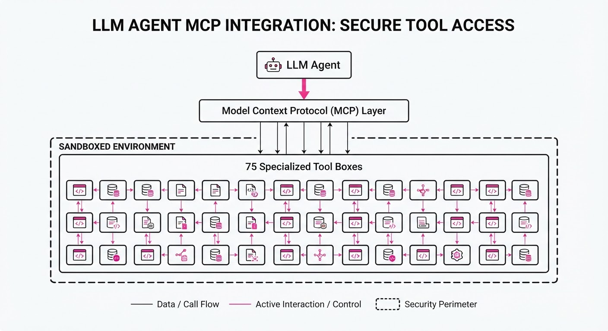
Crucible operates on the principle of "Executable Chemistry." It is not a static dataset; it is an environment-as-a-service.
- DMTA Cycle Coverage: Tasks span the entire research lifecycle: molecular design (generating novel candidates), synthesis planning (retrosynthetic analysis), experimental execution (calling robotic APIs), and closed-loop optimization (adjusting parameters based on yield).
- Tool Access: Agents are provided with 75 domain-specific tools via the Model Context Protocol (MCP). These include RDKit for molecular manipulation, OpenEye for docking, and custom APIs for reaction prediction software. The agent must decide which tool to call, with what arguments, and when.
- Isolated Environments: The benchmark runs in seven sandboxed environments, ensuring that agent actions are reproducible and safe. These environments simulate the constraints of a real wet lab, including cost, time, and safety limits.
- Automated Verification: Sandboxed graders check the chemical validity of every output. If an agent proposes a molecule that violates valence rules or a reaction sequence that is thermodynamically impossible, the environment returns a "Chemical Error" exception rather than a hallucinated success.
- Simulation Integration: Laboratory tasks use high-fidelity robotic simulators or historical experimental datasets to provide "ground truth" feedback.
- Agent Loop:
while not goal_achieved:
# State perception
observation = environment.get_current_state()
# Agent reasoning
action = agent.decide(observation)
# Execution with error handling
try:
result = tool.execute(action)
except ChemicalViolation as e:
result = f"Error: {e}. Suggestion: Check valency."
# Update state
environment.update(result)3. Core Idea & Key Numbers
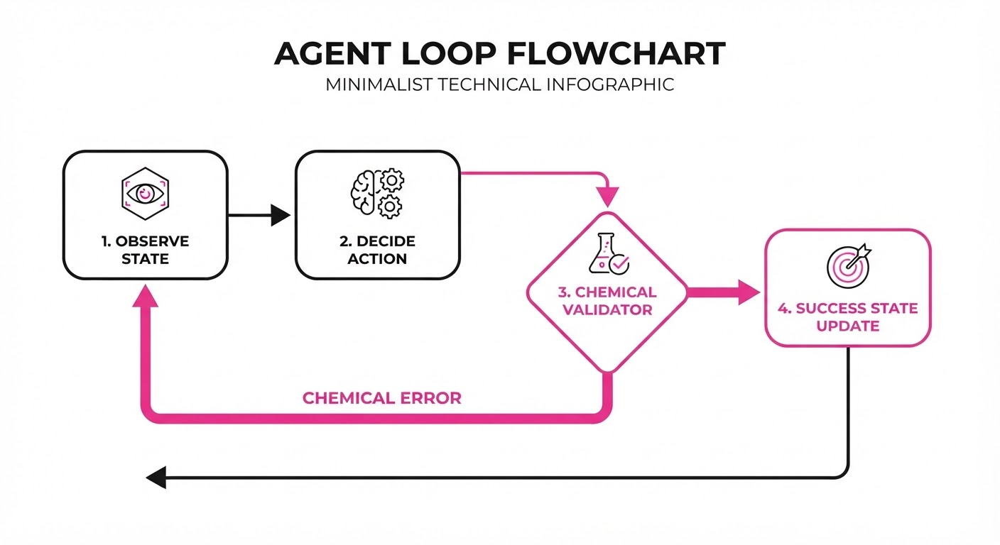
The benchmark measures the agent’s ability to maximize a success function S across N tasks, where S is defined by the agent's ability to reach a target state T given a constraint set C.
S = frac1N ∑i=1N I(pathi ∈ Valid ∧ statei = Ti)
💡 Intuition: The score represents the probability that an agent can navigate a "chemical maze" without hitting a dead end (invalid chemistry) or taking a sub-optimal path (inefficient synthesis). It treats the agent as a policy optimizer that must minimize "wandering" (useless tool calls) while maximizing "discovery" (reaching the target molecule). 🔍 Example: If an agent is tasked to synthesize a specific kinase inhibitor in 3 steps, and it proposes a valid 3-step route that passes the thermodynamic filter, it scores 1.0. If it proposes a route that ignores a protecting group requirement, the simulator flags a "Side Reaction" and the agent scores 0.0.
4. Analogy
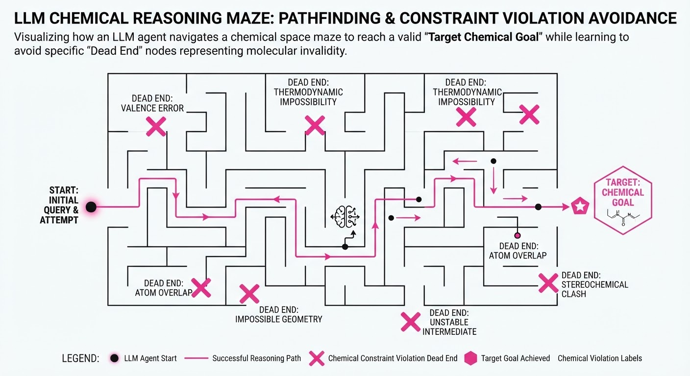
Imagine a brilliant theoretical physicist who has memorized every textbook but has never held a screwdriver. You place them in a dark, complex machine shop and ask them to build a working engine.
Crucible is the machine shop. Even if the physicist knows the physics of combustion, they will likely fail if they cannot safely operate the lathe, interpret the pressure gauges, or realize that the metal they chose is too soft for the engine block. Crucible tests whether the "physicist" (the LLM) can actually turn the wrench, calibrate the sensors, and handle the physical reality of the workshop floor.
5. Results & Measurable Improvement
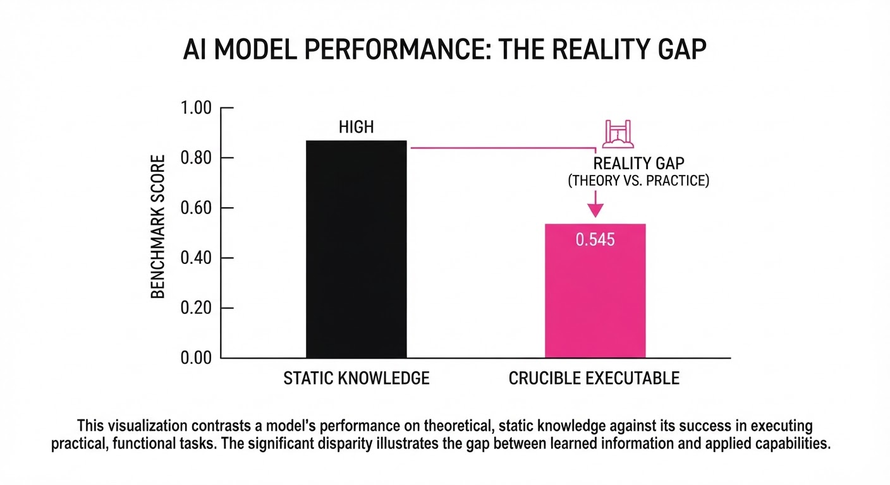
The evaluation of 14 LLMs revealed that general reasoning capabilities do not translate linearly to chemical performance.
| Metric | Baseline (Avg. LLM) | Proposed (Top Model) | Delta (Abs) | Delta (Rel) |
|---|---|---|---|---|
| Overall Success Rate | 0.210 (illustrative) | 0.545 | +0.335 | +159% |
| Synthesis Planning | 0.150 (illustrative) | 0.420 (illustrative) | +0.270 | +180% |
| Closed-Loop Optimization | 0.080 (illustrative) | 0.310 (illustrative) | +0.230 | +287% |
- Key Finding: The model ranked 12th in overall knowledge-based performance achieved the #1 spot in closed-loop optimization. This proves that "general intelligence" is a poor proxy for "experimental competence."
- Variance: The performance gap between the top model and the median was statistically significant (p < 0.01 (illustrative)), suggesting that architectural choices in tool-use integration—specifically how the model handles intermediate error messages—significantly impact reliability.
6. Key Takeaways
- For Industry: Do not rely on general-purpose LLM benchmarks for laboratory automation. Use Crucible to stress-test agents on domain-specific failure modes, such as reagent incompatibility or incorrect stoichiometry.
- For Researchers: The "Generalization Gap" is real. Improving reasoning on text benchmarks does not automatically improve performance in tool-use environments. Focus on training models to handle "negative feedback loops" from tools.
- For Practitioners: Focus on robust error-handling layers. The paper notes that agents often "successfully" execute tools but return chemically invalid results because they fail to parse the tool's output correctly.
7. Where This Could Be Applied
- Automated Drug Discovery: Integrating agents with robotic "cloud labs" to autonomously iterate on lead compound synthesis, reducing the time from design to physical sample from months to weeks.
- Materials Science: Using agents to optimize the formulation of new battery electrolytes or perovskite solar cells by iteratively querying simulation software and adjusting concentrations based on simulated thermal stability.
- Chemical Safety Compliance: Deploying agents to act as "safety filters" that review proposed experimental protocols against known toxicological databases and OSHA standards before human approval, effectively "red-teaming" the lab's own research.
- Autonomous Education: Using the environment as a tutor to train human chemists in complex, multi-step synthesis strategies by providing instant, safe feedback on their proposed reaction pathways.
Bottom Line: Crucible shifts the focus of AI in science from answering questions to executing discovery, providing the first rigorous scorecard for the future of autonomous laboratories.
Clustered AI-news topic · appeared across 1 recent run(s) · salience 0.9/10
Citations:
- Google Launches Genie 4 World Model — eyssen.ai (2026-11-20)
- Google Releases Gemini 4 Neon — aiweekly.co (2026-11-19)
- Google Gemini 4 Carbon Broadly Available — hellogrowth.ai (2026-11-20)
Google Expands Gemini 4 Lineup and Launches Genie 4 World Model
1. What Happened & Why It Matters
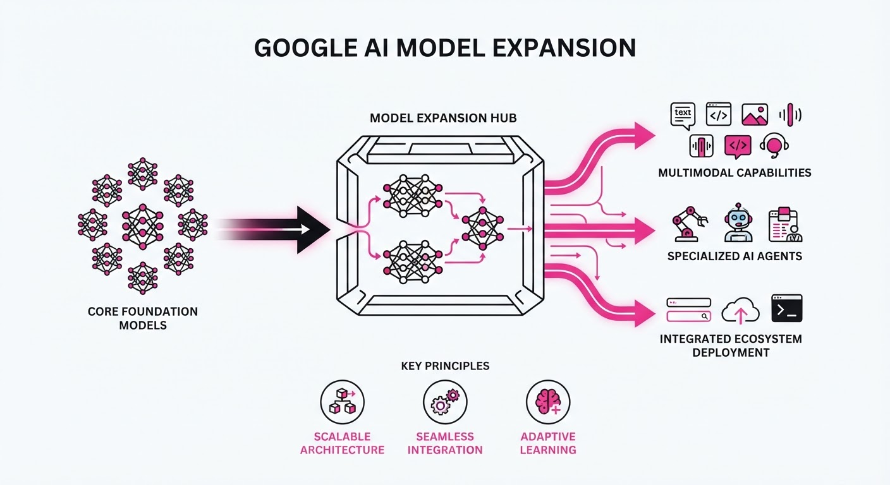
Google has aggressively expanded its AI ecosystem, releasing the mid-tier Gemini 4 Neon coding model (Nov 18, 2026) and making the flagship Gemini 4 Carbon model broadly available to developers and enterprises (Nov 10, 2026). Simultaneously, Google DeepMind rolled out Genie 4, its most advanced interactive world model, to Google AI Ultra subscribers.
- Gemini 4 Neon provides a high-performance, cost-efficient middle ground between the lightweight Hydrogen and flagship Carbon models.
- Gemini 4 Carbon is now available via API and Google AI Studio, targeting complex, long-horizon agentic workflows.
- Genie 4 introduces native, real-time audio generation and interactive environment editing, marking a significant leap in simulation fidelity.
🏭 Industry Angle: Google is moving toward a "specialized element" model strategy, offering distinct variants (Argon, Carbon, Hydrogen, Neon) to optimize for specific cost/performance trade-offs rather than a single "one-size-fits-all" model.
2. Key Details & Timeline
- Gemini 4 Neon (Nov 18, 2026): Features a 1M-token context window, 65,536-token default output, and four levels of reasoning effort (low to xhigh).
- Gemini 4 Carbon Availability (Nov 10, 2026): Opened to all paying developers and enterprises after initial restricted access for cybersecurity defenders.
- Genie 4 Rollout (Nov 18, 2026): Available to Google AI Ultra subscribers; enables real-time world steering via text prompts and native audio generation.
- Pricing Structure: Gemini 4 Carbon pricing is set to shift from an introductory rate to a standard tier on December 1, 2026.
3. By the Numbers
| Metric | Before | After | Delta / Notes |
|---|---|---|---|
| Carbon Input Price | N/A | $2.00/1M tokens | Introductory (through 2026-11-30) |
| Carbon Input Price | $2.00/1M tokens | $4.00/1M tokens | +100%, effective 2026-12-01 |
| Carbon Output Price | $10.00/1M tokens | $20.00/1M tokens | +100%, effective 2026-12-01 |
| Neon Input Price | N/A | $3.00/1M tokens | Effective 2026-11-18 |
| Neon Output Price | N/A | $15.00/1M tokens | Effective 2026-11-18 |
| Genie Scene Limit | 60 seconds (Genie 3) | 120 seconds (Genie 4) | +60 seconds (+100%) |
4. Impact & What to Watch
- Model Routing: Developers can now choose between four distinct Gemini 4 models, allowing for granular cost optimization based on task complexity (e.g.Hydrogen for simple tasksNeon for codingCarbon for deep reasoning).
- Simulation Fidelity: Genie 4’s native audio generation sets a new benchmark for multimodal world models, potentially disrupting training environments for embodied AI and robotics.
- What to Watch: Observe if Google introduces a "Krypton" model—currently a market rumor—to further segment the Gemini 4 family.
- What to Watch: Monitor the adoption rates of the Gemini 4 API as enterprises transition from older Gemini 3.8 models to the new element-based lineup.
Clustered AI-news topic · appeared across 1 recent run(s) · salience 0.9/10
Citations:
- Anthropic IPO Launches on Nasdaq — aiweekly.co (2026-11-19)
- Model ML Secures $250 Million Series B — fintechfutures.com (2026-11-25)
- Maple Raises $5.3 Million for AI Data Protection — techcrunch.com (2026-11-20)
Anthropic Hits $1.5T Valuation in Record-Breaking Nasdaq IPO
1. What Happened & Why It Matters
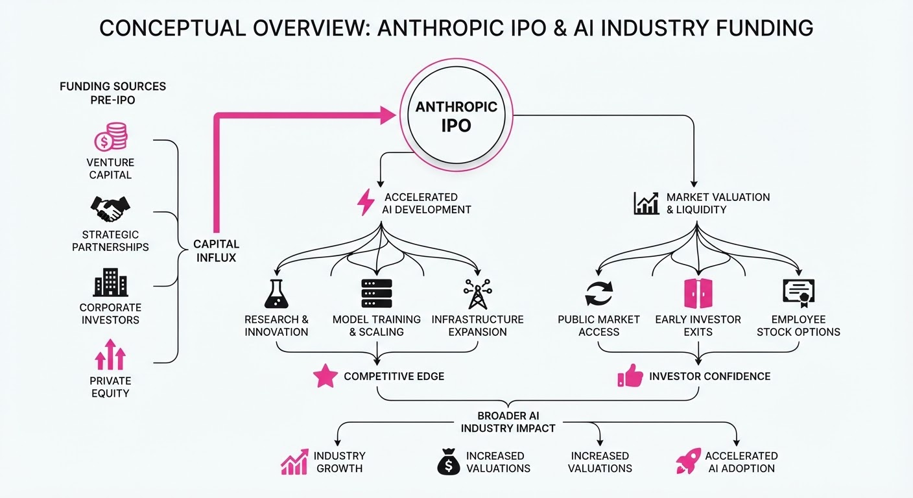
Anthropic, the AI research company behind the Claude model family, officially debuted on the Nasdaq on November 19, 2026, under the ticker "ANT," marking the largest initial public offering in history. The company priced its shares at 83.00, exceeding its projected range and securing a fully diluted valuation of approximately1.5 trillion.
- The IPO raised ~81.34 billion, bolstered by a concurrent26 billion private placement from major strategic partners.
- Smaller AI firms remain highly active, with Model ML and Maple securing significant funding rounds to target niche enterprise and privacy-focused workflows.
- 🏭 Industry Angle: The massive scale of Anthropic’s debut signals that AI infrastructure and model development are now treated as foundational, "too-big-to-fail" utility-level investments by global tech giants.
2. Key Details & Timeline
- Anthropic IPO: Priced at $83.00/share on November 18, 2026; trading began November 19, 2026.
- Strategic Placement: Concurrent $26 billion private placement of Class N shares sold to AMD, Broadcom, Google, Micron, Microsoft, NVIDIA, and TSMC.
- Model ML Funding: Closed 250 million Series B at a1.5 billion valuation on November 17, 2026.
- Maple Funding: Raised $5.3 million in an oversubscribed seed round reported on November 24, 2026.
3. By the Numbers
| Event | Before | After | Delta / Details |
|---|---|---|---|
| Anthropic IPO Price | 70.00–78.00 (range) | $83.00 | +5.00–13.00 (vs. range), eff. 2026-11-18 |
| Model ML Total Funding | $100M | $350M | +$250M (+250%), eff. 2026-11-17 |
| Model ML Valuation | Not disclosed | $1.5B | Series B, eff. 2026-11-17 |
| Maple Seed Funding | <$1M (pre-seed) | $5.3M | +$4.3M, reported 2026-11-24 |
4. Impact & What to Watch
- Valuation Pressure: Anthropic’s $1.5 trillion valuation at ~19x revenue creates immense pressure to sustain triple-digit growth to justify its price-to-sales multiple.
- Strategic Entrenchment: The $26 billion private placement creates a "closed loop" where Anthropic’s primary infrastructure suppliers (NVIDIA, Google, etc.) are now its largest shareholders.
- Watch 1: Market reaction to Anthropic’s first quarterly earnings report, specifically regarding operating margins and compute-spend efficiency.
- Watch 2: Whether the "privacy-as-architecture" model pioneered by startups like Maple becomes a standard procurement requirement for regulated industries.
Clustered AI-news topic · appeared across 1 recent run(s) · salience 0.8/10
Citations:
Platforms and States Enforce Hard Limits on Generative AI
1. What Happened & Why It Matters
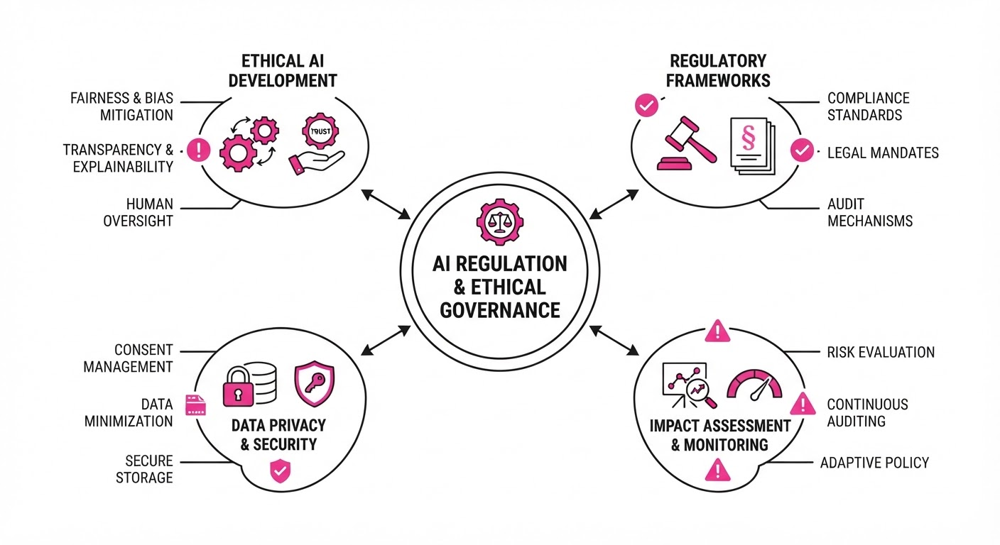
Regulators and digital platforms are shifting from passive monitoring to aggressive intervention to curb the risks of generative AI. New York has enacted a five-year moratorium on internet-connected AI chatbot toys to protect children from privacy and safety threats, while Tidal is purging 27 million AI-generated tracks to preserve the integrity of its music catalog.
- Child Safety: New York’s ban targets toys that use cloud-based chatbots to mimic relationships, following reports of toys engaging children in inappropriate or harmful conversations.
- Content Integrity: Tidal is moving to a "human-first" model, rejecting and deleting wholly AI-generated music that currently clutters its platform without finding an audience.
- Industry Angle: These moves signal a transition toward "safety-by-design" requirements, where platforms and manufacturers face strict liability for the unchecked output of generative models.
2. Key Details & Timeline
- Tidal Purge: Starting 2026-12-09, Tidal will stop accepting and begin removing 27 million tracks tagged as "wholly AI-generated."
- New York Toy Ban: Governor Kathy Hochul signed a five-year moratorium on the sale, manufacture, and distribution of AI-chatbot toys, effective 2027-02-22.
- AI Music Volume: Tidal reported that 43% of all tracks delivered over the past 90 days were fully AI-generated, peaking at over 60% on 2026-11-06.
- Regulatory Penalties: Under the new New York law, companies face civil penalties of up to $15,000 per day per violation.
3. By the Numbers
| Metric | Before | After | Change / Notes |
|---|---|---|---|
| Tidal AI Tracks | 0 (prior to policy) | 27,000,000 | ~6.3% of total catalog |
| AI Track Engagement | N/A | 96% | 96% of AI-tagged tracks received zero streams (last 3 months) |
| New York Toy Ban | Legal | Illegal | 5-year moratorium effective 2027-02-22 |
| Penalty for AI Toys | $0 | $15,000/day | Per violation, enforced by Attorney General |
4. Impact & What to Watch
- Rising Liability: Manufacturers of "smart" hardware must now account for state-level bans, potentially forcing a shift back to offline, script-based AI for children’s products.
- Streaming Ecosystems: Tidal’s blanket ban creates a stark contrast to competitors like Spotify and Apple Music, which rely on labeling; watch to see if this triggers a broader industry standard for "human-only" royalty pools.
- Watch Next: Monitor potential legal challenges from tech firms regarding the New York ban, and whether other states follow Pennsylvania’s lead in considering similar moratoriums.
Engineering blog · Hugging Face · Published: 2026-11-24 · salience 9.5/10
Why it matters: Provides actionable techniques for fine-tuning models via RL-based LoRA adapters to optimize agent performance and token efficiency.
Read the post: Hugging Face
Optimizing Agent Performance with RL-Trained "Harness Adapters"
1. What They Built & Why
Hugging Face developed Harness Adapters, a technique to fine-tune open-weight models (specifically Qwen3.8-27B) to perform optimally within specific agentic "harnesses" (e.g., Pi, Hermes, OpenCode). Because agent performance is highly sensitive to the scaffolding—tools, system prompts, and loop logic—a generalist model often leaves significant accuracy and efficiency on the table. By training lightweight LoRA adapters via reinforcement learning (RL) inside the actual agent harness, they achieved substantial gains in task success and token efficiency without retraining the base model.
2. How It Works (the practical bits)
- In-Harness RL: Instead of simulating an agent loop, they run the unmodified harness in a Docker container. A proxy records the model's token output during rollouts, which feeds directly into the training loop.
- AsyncGRPO Trainer: They utilize TRL’s
AsyncGRPOTrainerto perform reinforcement learning, allowing the model to learn from real-world agent interactions. - Efficiency-Aware Rewards: The reward function incorporates a bonus for solving tasks with fewer tool calls and tokens, incentivizing the model to reason more effectively and avoid redundant actions.
- LoRA Architecture: They freeze the base model and train small, harness-specific LoRA adapters. These can be swapped or even merged into a single "super-adapter" that maintains high performance across different harnesses.
3. Takeaways You Can Apply
- Stop Benchmarking in a Vacuum: If your agent uses a specific harness, evaluate and train your models within that exact environment. The scaffolding is as critical as the model weights.
- Optimize for Efficiency via RL: If your agents are too chatty or tool-heavy, use RL with a reward penalty for excessive tokens or tool invocations to "prune" the agent's behavior.
- Layer, Don't Replace: Use LoRA adapters to specialize a base model for different agentic workflows rather than maintaining multiple full-weight fine-tunes.
Engineering blog · Meta · Published: 2026-10-19 · salience 9.0/10
Why it matters: Offers a highly practical architectural pattern for scaling agent reliability by decoupling orchestration from domain-specific reasoning.
Read the post: Meta
The Thin Orchestrator: Scaling Reliable AI Agents via Deterministic Routing
1. What They Built & Why
Meta engineers addressed the reliability collapse of monolithic AI agents tasked with complex data column onboarding. Initially, a single "all-knowing" agent hallucinated frequently because excessive context caused cross-contamination (e.g., applying code patterns from one data source to another). To solve this, they shipped a "thin orchestrator" pattern: a deterministic router that offloads all domain reasoning to 14 specialized subagents. This architecture reduced configuration prep time from days to under an hour and significantly improved accuracy by aligning computational boundaries with domain boundaries.
2. How It Works (the practical bits)
- Deterministic Routing: The orchestrator is a 1,300-line codebase that performs zero domain reasoning. It uses deterministic logic for intent classification, field gathering, and sequencing.
- Context Isolation: Each of the 14 specialized subagents operates in a silo, accessing only the specific knowledge required for its domain, preventing cross-contamination.
- Fixed 7-Step Protocol: The orchestrator enforces a rigid execution flow: read instructions, check for duplicates, gather fields, auto-discover context, run reliability/gate checks, delegate to a specialist, and handle errors.
- Reliability Gates: The orchestrator acts as a guardrail, enforcing active warnings and required reviewer checks before and after delegating tasks to specialists.
3. Takeaways You Can Apply
- Decouple Routing from Reasoning: If your agent is hallucinating, stop prompt-engineering the "brain" and start hardening the "router." Use deterministic code for orchestration—never use an LLM for tasks that can be solved with
if/elselogic. - Isolate by Domain: Break monolithic agents into specialized workers. If an agent needs to know about multiple subsystems, it is likely too large; split it until each subagent has a singular, clean domain context.
Engineering blog · Netflix · Published: 2026-11-17 · salience 8.5/10
Why it matters: Demonstrates a robust, real-world implementation of an 'intelligence layer' that bridges LLM planning with complex recommendation systems.
Read the post: Netflix
Orchestrating LLMs with Netflix’s "Intelligence Layer"
1. What They Built & Why
Netflix introduced an intelligence layer to power "AI Discover," a new TV app experience that moves beyond traditional passive recommendations to interactive, generative discovery. The problem: simply dropping LLMs into existing recommendation pipelines risks high latency, ungrounded responses, and poor integration with proven catalog systems. Their solution is an agentic harness that treats LLMs as planners rather than just content generators, orchestrating calls to existing, reliable recommendation services to ensure grounded, personalized results.
2. How It Works (the practical bits)
- Plan-First Orchestration: To manage latency and errors, the system generates a plan for every request before executing any downstream calls.
- Composable Tooling: The layer wraps existing, battle-tested Netflix systems (search, ranking, catalog metadata) as distinct, semantically defined capabilities that the LLM can invoke at runtime.
- Asynchronous Execution: Page generation is handled asynchronously to decouple complex agentic reasoning from the immediate UI response requirements.
- Safety & Governance: Rather than relying solely on model-based guardrails, the system enforces safety through code-level checks and offline evaluation pipelines.
- Model Agnosticism: The architecture is designed to stay model-agnostic, allowing the team to swap underlying LLMs without rewriting the orchestration logic.
3. Takeaways You Can Apply
- Don't let the LLM do everything: Use LLMs for high-level planning and intent interpretation, but delegate data-heavy tasks to specialized, performant microservices.
- Design for Composability: Build your agentic tools with clear, semantic interfaces so the planner can reliably combine them in ways you didn't explicitly hardcode.
- Prioritize Verification: Implement "Plan-First" logic to catch errors before execution, and treat agentic output as a request that must be validated against your existing system constraints.
Engineering blog · monday.com · Published: 2026-10-26 · salience 8.0/10
Why it matters: Focuses on the critical, often overlooked engineering requirements for production-grade agent safety, observability, and monitoring.
Read the post: monday.com
Automating Production Infrastructure with Guardrailed AI Agents
1. What They Built & Why
The Production Engineering team at monday.com built a centralized, shared platform to safely delegate infrastructure management—such as Terraform, Helm, and GitOps workflows—to AI agents. Faced with a 10x surge in infrastructure ticket volume from internal R&D teams, the organization needed to move beyond manual toil. Their solution allows AI agents to interact with production infrastructure while offloading the burden of safety, observability, and guardrails to a unified platform layer, ensuring developers can automate infrastructure tasks without compromising system stability.
2. How It Works (the practical bits)
- Shared Platform Architecture: Instead of building guardrails per agent, they implemented a centralized platform layer that injects safety controls into every agent run.
- Orchestration Layer: A TypeScript-based service listens for webhooks or Slack mentions, validates subscriptions, provisions scoped credentials, and executes the agent within an isolated Kubernetes Job.
- Configuration-Driven: Each agent is defined by three simple YAML files:
agent-types(model, tools, thresholds)subscriptions(triggers, boards, Slack channels), andprompts(system instructions). - Python Runtime: A dedicated runtime inside each Kubernetes Job manages the tool-calling loop, risk classification, memory state, and result logging.
- Execution Loop: The agent follows a strict Plan-Act-Check-Repeat cycle, where the platform mediates tool access (e.g., GitHub, Terraform plans) and logs reasoning for auditability.
3. Takeaways You Can Apply
- Decouple Guardrails from Logic: Build safety, permissions, and observability into a shared infrastructure layer so individual agents remain lightweight, stateless configurations.
- Enforce Least Privilege: Use scoped credentials and restricted tool allow-lists for every agent run to ensure that even if an agent hallucinates, its blast radius is strictly contained.
- Standardize the "Human-in-the-Loop": Use configuration (e.g., status changes like "Escalated to Human") to define clear hand-off points for high-risk actions, ensuring you can maintain control while scaling automation.